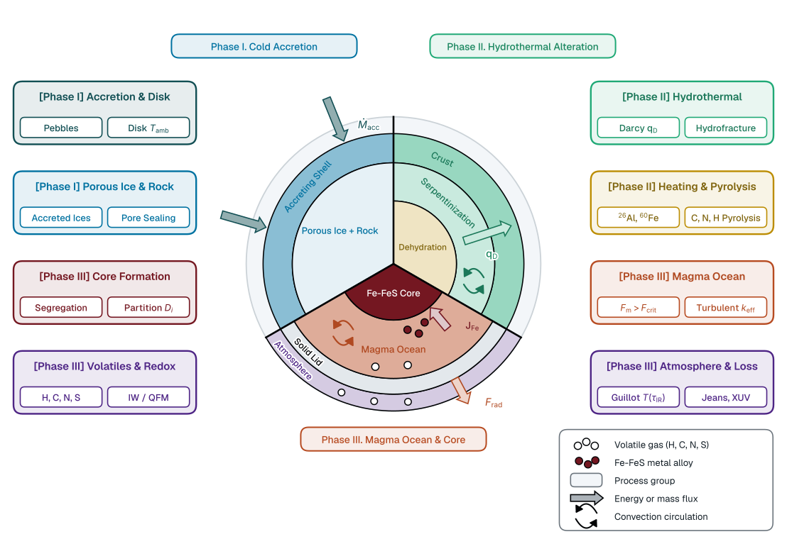
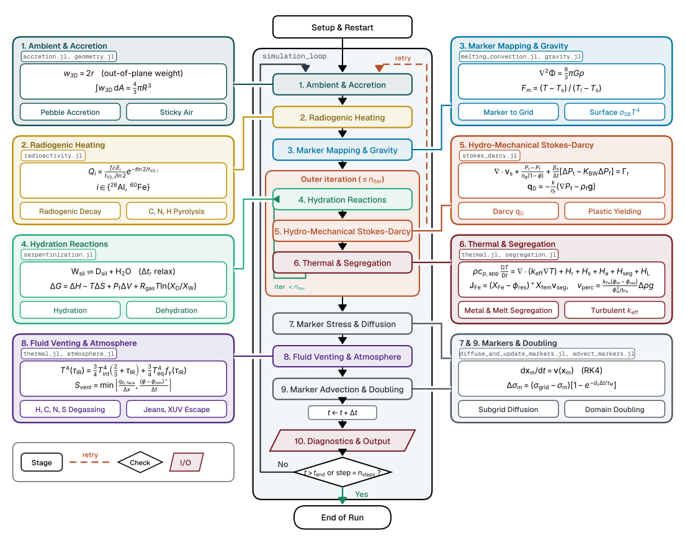

Model Overview
Erebus.jl models the internal physical and geochemical evolution of icy and rocky planetesimals during the first tens of millions of years of Solar System history.
The Physical Scenario
Planetesimals formed in the solar protoplanetary disk through the gravitational collapse of pebble swarms or streaming instabilities. Bodies that accreted during the first 2 to 3 million years after the formation of Calcium-Aluminum-rich Inclusions (CAIs) incorporated substantial quantities of short-lived radioactive isotopes, predominantly $^{26}\text{Al}$ (half-life $t_{1/2} \approx 0.717\text{ Ma}$) and $^{60}\text{Fe}$ ($t_{1/2} \approx 2.62\text{ Ma}$).
Figure 2 shows the 3 physical phases of a planetesimal and links them to the active processes in Erebus.

Figure 2: Planetesimal evolution across three physical phases. Sectors show successive phases of 1 body; sector widths do not scale with time. Left and right cards show physical processes that Erebus solves. Active modules depend on configuration switches; all modules are shown active. Flux arrows are schematic. (IW: Iron-Wüstite buffer; QFM: Quartz-Fayalite-Magnetite buffer; XUV: extreme-ultraviolet irradiation). Schematic (hand-built diagram, not simulation output).
In Figure 2:
- Phase I (Cold Accretion): Low temperatures preserve porous ice and pristine rock. Accretion delivers pebbles and volatile ices to the surface.
- Phase II (Hydrothermal Alteration): Radiogenic decay warms the interior. Ice melts into pore water. Darcy flow carries pore water through the permeable crust; heating drives serpentinization and later dehydration.
- Phase III (Magma Ocean & Core Segregation): Deep heating drives silicate melting above the silicate solidus ($T_\mathrm{s}$). Above the critical rheological transition ($F_\mathrm{m} > F_\mathrm{crit} \approx 0.40$), the mixture behaves as a liquid magma ocean. Liquid metal droplets segregate to form a metallic core, releasing segregation heating. Magma ocean surface heat flux $F_\mathrm{rad}$ radiates into space.
The table below lists the symbols in Figure 2.
| Phase | Symbol | Meaning | Unit | Where in the code |
|---|---|---|---|---|
| Phase I | $\dot{M}_\mathrm{acc}$ | Pebble and embryo accretion mass rate | $\text{kg/s}$ | accrete! (src/simulation/steps/accrete.jl) |
| $T_\mathrm{amb}$ | Protoplanetary disk ambient gas temperature | $\text{K}$ | prepare_step_ambient! (src/simulation/steps/prepare_step.jl) | |
| Phase II | $\mathbf{q}_\mathrm{D}$ | Darcy fluid volume flux vector | $\text{m/s}$ | reconstruct_darcy_fluxes! (src/numerics/stokes_darcy.jl) |
| $f_i$ | Number of host-element atoms per kg of rock ($^{26}\text{Al}$, $^{60}\text{Fe}$) | $\text{kg}^{-1}$ | thermodynamics.f_al, thermodynamics.f_fe (src/config.jl) | |
| Phase III | $\mathbf{J}_\mathrm{Fe}$ | Metal segregation volume flux vector | $\text{m/s}$ | apply_metal_segregation! (src/numerics/segregation.jl) |
| $D_i$ | Metal-silicate volatile partition coefficients ($i \in \{\mathrm{H}, \mathrm{C}, \mathrm{N}, \mathrm{S}\}$) | dimensionless | equilibrate_metal_silicate_volatiles! (src/physics/metal_partitioning.jl) | |
| $F_\mathrm{m}$ | Silicate melt fraction | dimensionless | compute_melt_fraction (src/physics/melting_convection.jl) | |
| $F_\mathrm{crit}$ | Critical rheological melt fraction threshold | dimensionless | melting.phi_crit (src/config.jl) | |
| $k_\mathrm{eff}$ | Turbulent convective thermal conductivity | $\text{W/}(\text{m}\cdot\text{K})$ | regularized_soft_turbulence_conductivity (src/physics/melting_convection.jl) | |
| $F_\mathrm{rad}$ | Surface radiative heat flux into space | $\text{W/m}^2$ | apply_surface_radiation! (src/simulation/steps/prepare_step.jl) | |
| $T(\tau_\mathrm{IR})$ | Atmospheric temperature at infrared optical depth $\tau_\mathrm{IR}$ | $\text{K}$ | compute_guillot_surface_temperature (src/atmosphere.jl) | |
| $\tau_\mathrm{IR}$ | Thermal infrared optical depth | dimensionless | compute_guillot_surface_temperature (src/atmosphere.jl) |
As these radionuclides decayed, they generated intense internal volumetric heating:
1. Ice Melting
Initial temperatures of $\approx 170\text{ K}$ rose rapidly. Once internal temperatures reached $273\text{ K}$, primordial water ice melted, absorbing latent heat ($L^f \approx 333\text{ kJ/kg}$) and generating mobile pore water in the porous silicate matrix.
2. Hydrothermal Circulation
Liquid water percolated through the interconnected pore network under Darcy flow, driven by thermal buoyancy and compaction-induced fluid pressure gradients.
3. Clay Dehydration and Gas Generation
At elevated temperatures ($T \approx 500\text{--}900\text{ K}$), hydrous phyllosilicates, such as serpentine, underwent thermal dehydration reactions, releasing structurally bound water into the pore fluid.
4. Matrix Compaction and Pore Overpressure
Viscous, elastic, and plastic deformation of the silicate matrix reduced porosity ($\phi$). When the compaction rate exceeded the rate of fluid escape via Darcy percolation, pore fluid pressure ($P_\mathrm{f}$) rose to match or exceed the total pressure ($P_\mathrm{t}$).
5. Failure and Hydrofracture
When the Terzaghi effective stress became tensile ($\sigma_{\text{eff}} \le -\sigma_{\text{tensile}}$), the silicate matrix experienced hydrofracturing, creating high-permeability pathways that vented fluids to the planetesimal surface.
6. Silicate Rock Melting, Magma Ascent, and Magma Ocean Formation
In planetesimals that accreted early, decay heating drove temperatures past the silicate solidus ($T_\mathrm{s} \approx 1400\text{ K}$). Rock melted into a crystal-liquid mush and transitioned into a vigorously convecting magma ocean above the rheological disaggregation threshold ($F_{\text{crit}} \approx 0.40$). Buoyant silicate melt segregates outward via porous Darcy percolation and hindered Stokes crystal settling, releasing gravitational shear dissipation and latent heat of crystallization. Sub-grid soft turbulence convection transported heat outward to the surface, buffering interior temperatures and governing core segregation.
7. Iron Core Formation and Metal Segregation
At temperatures exceeding the Fe-FeS eutectic ($T_{\text{eut}} \approx 1213\text{ K}$), dense metallic liquid melts and segregates inward toward the center. In partially molten rock, metal trickles downward by porous Darcy percolation. In magma oceans, metal droplets rain downward via Stokes settling, releasing gravitational potential energy that accelerates core formation.
Global Architecture & Execution Flow
The full simulation lifecycle, coupling between Eulerian staggered grids and Lagrangian markers, and the sequence of physical solvers are visualized below:

Figure 1: Execution pipeline and governing equations in Erebus. The center column shows the full run, where the boxes inside the frame form 1 time step. Side cards show governing equations and physical modules for each stage. The configuration file switches each module on or off; all modules are shown active. The outer iteration repeats stages 4, 5, and 6 until fields converge. If the plastic Stokes-Darcy iteration fails to converge, the step restarts from stage 1 with a reduced time step. Schematic (hand-built diagram, not simulation output).
Each marker carries the out-of-plane spherical weight $w_\mathrm{3D} = 2r$; see Geometry Convention for derivation and limits.
Numerical Execution Pipeline
The simulation loop advances physical time in 10 sequential stages:
Ambient & Accretion (
prepare_step_ambient!,accrete!): The code computes disk ambient temperature and pressure. It deposits accreted pebbles or embryos onto the body. It advances planetary radius $R(t)$ and updates sticky air boundaries.Radiogenic Heating (
radiogenic_heating!,update_pyrolysis!): The code computes analytical decay rates of short-lived radionuclides ($^{26}\text{Al}$, $^{60}\text{Fe}$). It adds volumetric heat sources to markers. It tracks volatile release from organic carbon pyrolysis.Marker Mapping & Gravity (
interpolate_markers_to_grid!,solve_gravity!,apply_surface_radiation!): The code interpolates marker properties to staggered grid nodes. It computes silicate melt fractions $F_\mathrm{m}$. It solves the Poisson equation for gravitational potential $\Phi$ and gravity $\mathbf{g}$. It applies radiative surface boundary conditions.Hydration Reactions (
perform_thermochemical_reaction!, outer iteration): The code solves reversible serpentinization and dehydration reactions through time-relaxed equilibrium with timescale $\Delta t_\mathrm{r}$. The code defines free energy change $\Delta G$ for the reaction $\mathrm{W_{sil}} \to \mathrm{D_{sil}} + \mathrm{H_2O}$ (dehydration). It updates mineral hydration states, fluid production, and reaction latent heat.Hydro-Mechanical Stokes-Darcy (
assemble_hydromechanical_lse!, outer iteration): The solver assembles and solves the linear system for solid velocities, total pressure, fluid Darcy flux, and fluid pressure. It updates matrix compaction and plastic yielding.Thermal & Segregation (
solve_thermal_energy!,apply_metal_segregation!,apply_silicate_melt_segregation!, outer iteration): The code solves the thermal energy equation with conduction and latent heat. In Stage 9, marker advection transports matrix and Darcy pore fluid heat. Turbulent convection and optional hydrothermal circulation enter through effective thermal conductivity $k_\mathrm{eff}$. The code computes downward iron drainage (apply_metal_segregation!,src/numerics/segregation.jl) and upward silicate melt ascent (apply_silicate_melt_segregation!,src/numerics/segregation.jl) using conservative drift-flux transport. Segregation releases gravitational dissipation heating $H_\mathrm{seg}$.Marker Stress & Diffusion (
diffuse_and_update_markers!): The code interpolates grid stress increments to markers and updates marker viscosity. Whensolver.dsubgrids> 0, it relaxes marker stress toward grid stress (Maxwell time $\tau_\mathrm{M}$). Whensolver.dsubgridt> 0, it does the same for temperature. Both are 0 by default.Fluid Venting & Atmosphere (
vent_and_degas!,advance_marker_thermo_porosity_venting!,evolve_atmosphere!): The code computes hydrofracture fluid venting and volatile exsolution from magma. Venting drainage rate $S_\mathrm{vent}$ is computed from surface Darcy flux in Stage 5 (apply_venting_surface_boundary!) and applied to drain marker pores in Stage 8. It callsadvance_marker_thermo_porosity_venting!to update marker temperatures and compaction porosity. It couples vented volatiles into surface atmospheric pressure and equilibrium temperature. It computes photo-evaporative and Jeans escape losses to space.Marker Advection & Doubling (
advect_markers!,replenish!,telescope_domain!): The code advects markers with a 4th-order Runge-Kutta scheme (RK4). It transports matrix heat and Darcy pore fluid heat along marker paths. It updates nodal total and fluid pressures. It replenishes markers in empty cells. The code doubles domain size when the body radius exceeds 70% of domain half-width ($0.70 \cdot x_\mathrm{size}/2$; see Telescoping Domain).Diagnostics & Output (
advance_step_diagnostics!): After telescoping, the loop advances physical time $t \leftarrow t + \Delta t$. The code logs conservation metrics, saves JLD2 checkpoints, and streams telemetry records.
Outer Iteration and Timestep Control
Stages 4, 5, and 6 form an outer iteration loop that repeats up to $n_\mathrm{iter}$ (solver.max_plastic_iterations):
- Convergence criteria: The loop stops when all 3 conditions are true:
- The fluid pressure error is below
reaction.pferrmax. - The loop ran more than 2 iterations, or the reaction rate is zero (
DMP == 0). - The maximum temperature change is at most $\Delta T_\mathrm{max}$ (
time.DTmax).
solver.max_plastic_iterations, the step continues withthermochemical_converged = false. - The fluid pressure error is below
- Plastic convergence and retries: The code saves a snapshot (a copy of the state at the start of the step) before the outer loop. If plastic iterations fail to converge, the step restores the snapshot, sets $\Delta t = \min(\Delta t/2, \Delta t_\mathrm{next})$, and restarts from Stage 1. The simulation stops after
solver.max_dt_reductionsreductions. - Accretion timestep resync: If
cfg.accretion.activeis true and $\Delta t$ was reduced during the step, the code restores the snapshot and restarts the step once at the reduced $\Delta t$ to preserve accretion rate synchronization.
Model Capabilities and Scope
Key capabilities include:
- Solves 2-D Cartesian flow for planetesimals in sticky air.
- Solves viscous and plastic rock matrix flow coupled to Darcy fluid flow with Biot poroelastic compressibility and Drucker-Prager failure.
- Solves heat conduction, fluid flow, radiogenic heat ($^{26}\text{Al}$, $^{60}\text{Fe}$), reaction and melt latent heats, shear heating, and turbulent heat flow.
- Tracks rock hydration and dehydration, surface vents, and dynamic hydrofracture permeability when pore fluid pressure exceeds rock strength.
- Models rock melting, melt ascent, and liquid metal settling to a central core via Darcy flow and Stokes settling.
- Conserves elemental budgets (H, C, N, S, O) with ice mixtures, organics, melt solubility, equilibrium gas release, metal-silicate partition, and Iron-Wüstite redox buffers.
- Couples a 1D Guillot radiative profile with gas chemistry, photo-evaporative loss, and Jeans escape.
- Models body growth from pebble and embryo impacts, with domain doubling at constant cell size.
- Computes gravity fields from a 2-D Poisson solve or an enclosed-mass radial profile.
- Reads TOML files, writes restart files, streams run metrics, and executes Latin Hypercube parameter sweeps.
- Supports exact bitwise checks for resumed runs on all markers, grid fields, atmosphere, and random seed states.
Symbols and Governing Equations by Stage
The tables below list the symbols in Figure 1, grouped by execution stage.
Stage 1: Ambient & Accretion
Module: src/simulation/steps/prepare_step.jl, src/simulation/steps/accrete.jl
| Symbol | Meaning | Unit | Where in the code |
|---|---|---|---|
| $w_\mathrm{3D}$ | Out-of-plane cylindrical-to-spherical marker weighting factor ($2r$) | $\text{m}$ | marker_out_of_plane_length (src/geometry.jl) |
| $r$ | Radial distance from planetesimal center | $\text{m}$ | marker_out_of_plane_length (src/geometry.jl) |
| $A$ | Cross-sectional computational area | $\text{m}^2$ | marker_area (src/geometry.jl) |
| $R$ | Outer planetesimal radius | $\text{m}$ | geometry.rplanet (src/config.jl, initial value), state.accumulators.rplanet (src/simulation/steps/accrete.jl) |
Stage 2: Radiogenic Heating
Module: src/physics/radioactivity.jl, src/simulation/steps/radiogenic_heating.jl
| Symbol | Meaning | Unit | Where in the code |
|---|---|---|---|
| $Q_i$ | Specific radiogenic decay heating for isotope $i$ | $\text{W/kg}$ | Q_radiogenic (src/physics/radioactivity.jl) |
| $f_i$ | Number of host-element atoms per kg of bulk rock | $\text{kg}^{-1}$ | thermodynamics.f_al, thermodynamics.f_fe (src/config.jl) |
| $r_i$ | Initial isotopic abundance ratio ($^{26}\text{Al}/^{27}\text{Al}$, $^{60}\text{Fe}/^{56}\text{Fe}$) | dimensionless | thermodynamics.ratio_al, thermodynamics.ratio_fe (src/config.jl) |
| $E_i$ | Decay energy per decay event | $\text{J}$ | thermodynamics.E_al, thermodynamics.E_fe (src/config.jl) |
| $t_{1/2, i}$ | Isotope half-life | $\text{s}$ | thermodynamics.t_half_al, thermodynamics.t_half_fe (src/config.jl) |
| $t$ | Elapsed physical time since CAI formation | $\text{s}$ | radiogenic_heating! (src/simulation/steps/radiogenic_heating.jl) |
| $i$ | Radionuclide system index ($^{26}\text{Al}$, $^{60}\text{Fe}$) | dimensionless | radiogenic_heating! (src/simulation/steps/radiogenic_heating.jl) |
Stage 3: Marker Mapping & Gravity
Module: src/simulation/steps/interpolate_markers_to_grid.jl, src/simulation/steps/solve_gravity.jl, src/physics/melting_convection.jl, src/config.jl
| Symbol | Meaning | Unit | Where in the code |
|---|---|---|---|
| $\Phi$ | Gravitational potential | $\text{m}^2/\text{s}^2$ | solve_gravity! (src/simulation/steps/solve_gravity.jl) |
| $G$ | Newtonian gravitational constant | $\text{m}^3/(\text{kg}\cdot\text{s}^2)$ | constants.jl |
| $\rho$ | Bulk mixture density | $\text{kg/m}^3$ | interpolate_markers_to_grid! (src/simulation/steps/interpolate_markers_to_grid.jl) |
| $F_\mathrm{m}$ | Silicate melt fraction | dimensionless | compute_melt_fraction (src/physics/melting_convection.jl) |
| $T$ | Temperature | $\text{K}$ | interpolate_markers_to_grid! (src/simulation/steps/interpolate_markers_to_grid.jl) |
| $T_\mathrm{s}$ | Silicate solidus temperature | $\text{K}$ | melting.T_solidus (src/config.jl) |
| $T_\mathrm{l}$ | Silicate liquidus temperature | $\text{K}$ | melting.T_liquidus (src/config.jl) |
| $\sigma_\mathrm{SB}$ | Stefan-Boltzmann constant | $\text{W/}(\text{m}^2\cdot\text{K}^4)$ | thermodynamics.sigma_sb (src/config.jl) |
Stage 4: Hydration Reactions
Module: src/physics/serpentinization.jl, src/constants.jl
| Symbol | Meaning | Unit | Where in the code |
|---|---|---|---|
| $\mathrm{W_\mathrm{sil}}$ | Hydrous silicate mineral phase (serpentine) | dimensionless | perform_thermochemical_reaction! (src/physics/serpentinization.jl) |
| $\mathrm{D_\mathrm{sil}}$ | Anhydrous silicate mineral phase (olivine) | dimensionless | perform_thermochemical_reaction! (src/physics/serpentinization.jl) |
| $\mathrm{H_2O}$ | Pore water phase | dimensionless | perform_thermochemical_reaction! (src/physics/serpentinization.jl) |
| $\Delta t_\mathrm{r}$ | Thermochemical reaction relaxation timescale | $\text{s}$ | compute_Δtreaction (src/physics/serpentinization.jl) |
| $\Delta G$ | Gibbs free energy change of reaction | $\text{J/mol}$ | compute_gibbs_free_energy (src/physics/serpentinization.jl) |
| $\Delta H$ | Standard molar enthalpy change | $\text{J/mol}$ | compute_gibbs_free_energy (src/physics/serpentinization.jl) |
| $\Delta S$ | Standard molar entropy change | $\text{J/}(\text{mol}\cdot\text{K})$ | compute_gibbs_free_energy (src/physics/serpentinization.jl) |
| $\Delta V$ | Solid-fluid reaction molar volume change | $\text{m}^3/\text{mol}$ | compute_gibbs_free_energy (src/physics/serpentinization.jl) |
| $P_\mathrm{f}$ | Pore fluid pressure | $\text{Pa}$ | perform_thermochemical_reaction! (src/physics/serpentinization.jl) |
| $R_\mathrm{gas}$ | Universal gas constant | $\text{J/}(\text{mol}\cdot\text{K})$ | constants.jl |
| $X_\mathrm{D}, X_\mathrm{W}$ | Molar fractions of dry and wet silicate phases | dimensionless | perform_thermochemical_reaction! (src/physics/serpentinization.jl) |
Outer Iteration Loop (Stages 4 to 6)
Module: src/simulation/loop.jl, src/config.jl
| Symbol | Meaning | Unit | Where in the code |
|---|---|---|---|
| $n_\mathrm{iter}$ | Maximum outer nonlinear iteration count | dimensionless | solver.max_plastic_iterations (src/config.jl) |
| $\text{iter}$ | Outer iteration loop counter | dimensionless | simulation_loop (src/simulation/loop.jl) |
Stage 5: Hydro-Mechanical Stokes-Darcy
Module: src/numerics/stokes_darcy.jl, src/physics/poroelasticity.jl, src/physics/serpentinization.jl
| Symbol | Meaning | Unit | Where in the code |
|---|---|---|---|
| $\mathbf{v}_\mathrm{s}$ | Solid rock velocity vector | $\text{m/s}$ | assemble_hydromechanical_lse! (src/numerics/stokes_darcy.jl) |
| $P_\mathrm{t}$ | Total pressure (solid plus fluid) | $\text{Pa}$ | assemble_hydromechanical_lse! (src/numerics/stokes_darcy.jl) |
| $P_\mathrm{f}$ | Fluid pore pressure | $\text{Pa}$ | assemble_hydromechanical_lse! (src/numerics/stokes_darcy.jl) |
| $\eta_\phi$ | Bulk compaction viscosity | $\text{Pa}\cdot\text{s}$ | assemble_hydromechanical_lse! (src/numerics/stokes_darcy.jl) |
| $\phi$ | Porosity | dimensionless | assemble_hydromechanical_lse! (src/numerics/stokes_darcy.jl) |
| $\beta_\mathrm{d}$ | Drained bulk rock compressibility | $\text{Pa}^{-1}$ | assemble_hydromechanical_lse! (src/numerics/stokes_darcy.jl) |
| $K_\mathrm{BW}$ | Biot-Willis poroelastic coefficient, $1 - \beta_\mathrm{s}/\beta_\mathrm{d}$ | dimensionless | compute_biot_willis_coefficient (src/physics/poroelasticity.jl) |
| $\Delta t$ | Computational time step | $\text{s}$ | assemble_hydromechanical_lse! (src/numerics/stokes_darcy.jl) |
| $\Delta P_\mathrm{t}$ | Total pressure increment | $\text{Pa}$ | assemble_hydromechanical_lse! (src/numerics/stokes_darcy.jl) |
| $\Delta P_\mathrm{f}$ | Pore fluid pressure increment | $\text{Pa}$ | assemble_hydromechanical_lse! (src/numerics/stokes_darcy.jl) |
| $\Gamma_\mathrm{r}$ | Reaction fluid volume generation rate ($DMP$) | $\text{s}^{-1}$ | assemble_hydromechanical_lse! (src/numerics/stokes_darcy.jl) |
| $\mathbf{q}_\mathrm{D}$ | Darcy fluid volume flux vector | $\text{m/s}$ | reconstruct_darcy_fluxes! (src/numerics/stokes_darcy.jl) |
| $k$ | Dynamic permeability | $\text{m}^2$ | reconstruct_darcy_fluxes! (src/numerics/stokes_darcy.jl) |
| $\eta_\mathrm{f}$ | Pore fluid dynamic viscosity | $\text{Pa}\cdot\text{s}$ | reconstruct_darcy_fluxes! (src/numerics/stokes_darcy.jl) |
| $\rho_\mathrm{f}$ | Pore fluid density | $\text{kg/m}^3$ | reconstruct_darcy_fluxes! (src/numerics/stokes_darcy.jl) |
| $\mathbf{g}$ | Gravitational acceleration vector | $\text{m/s}^2$ | reconstruct_darcy_fluxes! (src/numerics/stokes_darcy.jl) |
Stage 6: Thermal & Segregation
Module: src/simulation/steps/solve_thermal_energy.jl, src/numerics/thermal.jl, src/numerics/segregation.jl, src/physics/core_dynamics.jl, src/physics/dissipation.jl, src/physics/melting_convection.jl, src/config.jl
| Symbol | Meaning | Unit | Where in the code |
|---|---|---|---|
| $\rho c_{p,\mathrm{app}}$ | Apparent volumetric heat capacity | $\text{J/}(\text{m}^3\cdot\text{K})$ | rhocp_apparent_silicate (src/physics/melting_convection.jl) |
| $\mathrm{D}/\mathrm{D}t$ | Material derivative along marker trajectory | $\text{s}^{-1}$ | solve_thermal_energy! (src/simulation/steps/solve_thermal_energy.jl) |
| $T$ | Temperature | $\text{K}$ | solve_thermal_energy! (src/simulation/steps/solve_thermal_energy.jl) |
| $t$ | Simulation physical time | $\text{s}$ | solve_thermal_energy! (src/simulation/steps/solve_thermal_energy.jl) |
| $k_\mathrm{eff}$ | Effective thermal conductivity with soft turbulence | $\text{W/}(\text{m}\cdot\text{K})$ | regularized_soft_turbulence_conductivity (src/physics/melting_convection.jl) |
| $H_\mathrm{r}$ | Radiogenic decay volumetric heating | $\text{W/m}^3$ | radiogenic_heating! (src/simulation/steps/radiogenic_heating.jl) |
| $H_\mathrm{s}$ | Viscous shear, compaction and Darcy friction dissipation | $\text{W/m}^3$ | compute_shear_heating! (src/physics/dissipation.jl) |
| $H_\mathrm{a}$ | Adiabatic heating from solid and fluid pressure change | $\text{W/m}^3$ | compute_adiabatic_heating! (src/physics/dissipation.jl) |
| $H_\mathrm{seg}$ | Gravitational dissipation from metal and melt segregation | $\text{W/m}^3$ | apply_metal_segregation! (src/numerics/segregation.jl) |
| $H_\mathrm{L}$ | Latent heat of reactions, melting, and phase changes | $\text{W/m}^3$ | solve_thermal_energy! (src/simulation/steps/solve_thermal_energy.jl) |
| $\mathbf{J}_\mathrm{Fe}$ | Metal segregation volume flux vector | $\text{m/s}$ | apply_metal_segregation! (src/numerics/segregation.jl) |
| $X_\mathrm{Fe}$ | Bulk metal volume fraction | dimensionless | apply_metal_segregation! (src/numerics/segregation.jl) |
| $X_\mathrm{fem}$ | Molten share of the metal in a cell | dimensionless | apply_metal_segregation! (src/numerics/segregation.jl) |
| $\phi_\mathrm{m}$ | Molten metal volume fraction, $\phi_\mathrm{m} = X_\mathrm{Fe} X_\mathrm{fem}$ | dimensionless | metal_segregation_velocity (src/physics/core_dynamics.jl) |
| $\phi_\mathrm{res}$ | Residual metal retention threshold | dimensionless | coreformation.phi_residual (src/config.jl) |
| $\mathbf{v}_\mathrm{seg}$ | Metal segregation velocity vector | $\text{m/s}$ | metal_segregation_velocity (src/physics/core_dynamics.jl) |
| $v_\mathrm{perc}$ | Darcy porous percolation velocity | $\text{m/s}$ | metal_segregation_velocity (src/physics/core_dynamics.jl) |
| $k_\mathrm{Fe}$ | Molten metal permeability | $\text{m}^2$ | metal_segregation_velocity (src/physics/core_dynamics.jl) |
| $\eta_\mathrm{Fe}$ | Liquid metal dynamic viscosity | $\text{Pa}\cdot\text{s}$ | metal_segregation_velocity (src/physics/core_dynamics.jl) |
| $\Delta\rho$ | Density contrast ($\rho_\mathrm{Fe} - \rho_\mathrm{sil}$) | $\text{kg/m}^3$ | metal_segregation_velocity (src/physics/core_dynamics.jl) |
| $g$ | Magnitude of gravitational acceleration | $\text{m/s}^2$ | metal_segregation_velocity (src/physics/core_dynamics.jl) |
Stages 7 and 9: Marker Stress & Doubling
Module: src/simulation/steps/diffuse_and_update_markers.jl, src/simulation/steps/advect_markers.jl, src/simulation/steps/replenish.jl, src/simulation/steps/telescope_domain.jl, src/config.jl
| Symbol | Meaning | Unit | Where in the code |
|---|---|---|---|
| $\mathbf{x}_m$ | Marker coordinate position vector in 2-D | $\text{m}$ | advect_markers! (src/simulation/steps/advect_markers.jl) |
| $t$ | Elapsed simulation physical time | $\text{s}$ | advect_markers! (src/simulation/steps/advect_markers.jl) |
| $\mathbf{v}(\mathbf{x}_m)$ | Velocity field interpolated to marker position | $\text{m/s}$ | advect_markers! (src/simulation/steps/advect_markers.jl) |
| $\text{RK4}$ | Fourth-order Runge-Kutta integration scheme | dimensionless | advect_markers! (src/simulation/steps/advect_markers.jl) |
| $\Delta \sigma_m$ | Subgrid stress diffusion increment on marker $m$ | $\text{Pa}$ | diffuse_and_update_markers! (src/simulation/steps/diffuse_and_update_markers.jl) |
| $\sigma_\mathrm{grid}$ | Deviatoric stress interpolated from grid nodes | $\text{Pa}$ | diffuse_and_update_markers! (src/simulation/steps/diffuse_and_update_markers.jl) |
| $\sigma_m$ | Marker deviatoric stress state | $\text{Pa}$ | diffuse_and_update_markers! (src/simulation/steps/diffuse_and_update_markers.jl) |
| $d_s$ | Subgrid stress diffusion damping parameter | dimensionless | solver.dsubgrids (src/config.jl) |
| $\tau_\mathrm{M}$ | Maxwell viscoelastic relaxation timescale | $\text{s}$ | diffuse_and_update_markers! (src/simulation/steps/diffuse_and_update_markers.jl) |
| $r_\mathrm{max}$ | Maximum radial distance of active markers | $\text{m}$ | telescope_domain! (src/simulation/steps/telescope_domain.jl) |
| $R_\mathrm{tel}$ | Domain doubling threshold ($0.70 \cdot x_\mathrm{size}/2$) | $\text{m}$ | telescoping.r_threshold_fraction (src/config.jl) |
Stage 8: Fluid Venting & Atmosphere
Module: src/numerics/thermal.jl, src/atmosphere.jl, src/simulation/steps/vent_and_degas.jl
| Symbol | Meaning | Unit | Where in the code |
|---|---|---|---|
| $T(\tau_\mathrm{IR})$ | Atmospheric temperature at infrared optical depth $\tau_\mathrm{IR}$ | $\text{K}$ | compute_guillot_surface_temperature (src/atmosphere.jl) |
| $\tau_\mathrm{IR}$ | Thermal infrared optical depth coordinate | dimensionless | compute_guillot_surface_temperature (src/atmosphere.jl) |
| $T_\mathrm{int}$ | Interior effective radiating temperature | $\text{K}$ | compute_guillot_surface_temperature (src/atmosphere.jl) |
| $T_\mathrm{eq}$ | Planetary equilibrium irradiation temperature | $\text{K}$ | compute_guillot_surface_temperature (src/atmosphere.jl) |
| $f_\gamma(\tau_\mathrm{IR})$ | Semi-grey atmospheric temperature shape factor | dimensionless | compute_guillot_surface_temperature (src/atmosphere.jl) |
| $S_\mathrm{vent}$ | Surface venting drainage rate (computed in Stage 5, applied in Stage 8) | $\text{s}^{-1}$ | apply_venting_surface_boundary! (src/numerics/thermal.jl) |
| $q_{D,\mathrm{face}}$ | Outward Darcy flux at venting boundary face | $\text{m/s}$ | apply_venting_surface_boundary! (src/numerics/thermal.jl) |
| $\Delta x$ | Grid cell spatial spacing | $\text{m}$ | apply_venting_surface_boundary! (src/numerics/thermal.jl) |
| $\phi$ | Local rock porosity | dimensionless | apply_venting_surface_boundary! (src/numerics/thermal.jl) |
| $\phi_\mathrm{min}$ | Minimum residual porosity floor | dimensionless | poroelasticity.phimin (src/config.jl) |
| $\Delta t$ | Computational time step | $\text{s}$ | apply_venting_surface_boundary! (src/numerics/thermal.jl) |
Stage 10: Diagnostics & Output
Module: src/simulation/steps/diagnostics_and_output.jl, src/config.jl
| Symbol | Meaning | Unit | Where in the code |
|---|---|---|---|
| $t$ | Elapsed simulation physical time | $\text{s}$ | simulation_loop (src/simulation/loop.jl) |
| $t_\mathrm{end}$ | Simulation termination physical time | $\text{yr}$ | time.endtime (src/config.jl; converted to $\text{s}$ in code) |
| $\text{step}$ | Current simulation time step index | dimensionless | simulation_loop (src/simulation/loop.jl) |
| $n_\mathrm{steps}$ | Maximum allowed simulation time step count | dimensionless | time.n_steps (src/config.jl) |
Standard Abbreviations
| Abbreviation | Meaning |
|---|---|
| IW | Iron-Wüstite oxygen fugacity buffer (equilibrium between metallic iron and wüstite FeO). |
| QFM | Quartz-Fayalite-Magnetite oxygen fugacity buffer (silicate-oxide redox reference). |
| XUV | Extreme-ultraviolet stellar irradiation driving photo-evaporative atmospheric escape. |
| CAI | Calcium-Aluminum-rich Inclusion (earliest dated Solar System refractory solids). |
| RK4 | Fourth-order Runge-Kutta numerical integration scheme. |
| UMFPACK | Unsymmetric MultiFrontal sparse direct solver library used for production 2-D solves. |
Thermo-Hydro-Mechanical Coupling
Erebus.jl resolves these interacting regimes through a fully coupled numerical framework:
- Thermal solver calculates conduction, radioactive decay, latent heat buffering, fluid advective heat transport, and segregation dissipation heating.
- Hydromechanical solver simultaneously solves coupled Stokes solid deformation, Darcy fluid flux, and poroelastic volume changes in a monolithic linear system.
- Marker-in-Cell advects material phases, temperature, composition, and porosity without numerical diffusion across moving boundaries.
- Melting and soft turbulence routines evaluate pressure-dependent silicate melting, apparent heat capacity latent heat buffering, suspension rheology, and regularized sub-grid convective conductivity.
- Magma transport drift-flux solver tracks conservative outward buoyant migration of silicate melt, couples Darcy percolation and hindered Stokes crystal settling, models subsolidus crystallization and dissipation heating, and tracks mantle depletion.
- Metal segregation drift-flux solver tracks conservative downward migration of molten iron, couples percolation and Stokes droplet settling through the rheological transition, and computes gravitational dissipation heating.
Geometry Convention
Erebus.jl models the planetesimal as a 2D Cartesian cross-section passing through the planetary center $(x_{\text{center}}, y_{\text{center}})$.
Two-Dimensional Form and Three-Dimensional Mapping
The computational domain represents a planar slice through a spherical body. To evaluate three-dimensional integral quantities (such as total mass, component inventories, and integrated volatile degassing) from planar marker positions, each Lagrangian marker $m$ at distance $r_m = \sqrt{(x_m - x_{\text{center}})^2 + (y_m - y_{\text{center}})^2}$ carries an effective out-of-plane spherical integration length $w_\mathrm{3D}$:
[ w\mathrm{3D} = 2 rm ]
Under the assumption of spherical symmetry, this geometric mapping reinterprets each concentric ring at radius $r_m$ as a spherical shell of radius $r_m$. Integrating over a circular disk of radius $R$ in the 2D Cartesian cross-section with differential marker area $A_m = \Delta x_m \Delta y_m$ recovers the exact volume of a sphere:
[ V{\text{3D}} = \int{\text{disk}} w\mathrm{3D} \, dA = \int0^{2\pi} d\theta \int0^R (2r) \, r \, dr = 4\pi \int0^R r^2 \, dr = \frac{4}{3} \pi R^3 ]
For spherically symmetric or radially averaged distributions, mass increments and volatile transfers map between 2D planar sums and 3D spherical inventories via:
[ \Delta M = \summ \rhom Am w\mathrm{3D} \Delta Cm, \quad w\mathrm{3D} = 2 rm, \quad Am = \Delta xm \cdot \Delta ym ]
where $\rho_m$ is the marker density, $A_m$ is the marker differential area, and $\Delta C_m$ is the dimensionless mass fraction or phase change increment.
Weighting Limits
The out-of-plane weighting function $w_\mathrm{3D} = 2r$ exhibits three characteristic limits in planetary structures:
- Planetary surface limit ($r \to R$): Near the outer planetary radius, $w_\mathrm{3D} = 2R$. Surface flux and atmospheric exchange calculations scale with out-of-plane diameter $2R$.
- Finite shell mean ($r \in [r_{\text{inner}}, R]$): For an outer spherical shell, the ratio of integrated 3D shell mass to 2D planar shell mass equals $\frac{4}{3} \frac{R^3 - r_{\text{inner}}^3}{R^2 - r_{\text{inner}}^2}$. For a near-surface shell spanning $0.9R \le r \le R$, this ratio evaluates to approximately $1.902 R$.
- Full spherical volume mean: Integrating over the entire circular section yields the full spherical volume $\frac{4}{3} \pi R^3$, corresponding to an area-weighted mean out-of-plane thickness of $\frac{4}{3} R$.
Dynamic Flow and Conservation
Hydromechanical Stokes flow, Darcy filtration, and marker transport operate in the 2D Cartesian cross-section. Because 2D Cartesian divergence-free velocity fields ($\nabla \cdot \mathbf{v} = 0$) do not preserve the axisymmetric volume element $r \, dr$, planar advection does not automatically conserve the 3D-weighted inventory $\sum_m \rho_m A_m (2 r_m)$. The helper functions marker_out_of_plane_length and marker_area provide the geometric primitives to evaluate 3D spherical projections alongside 2D cross-sectional quantities.
Thermal conduction incorporates an optional radial geometric metric term to account for spherical divergence in conductive heat flow in the cross-section.
Gravitational Source Term
The Poisson solver evaluates gravitational potential from the 2D density field using an effective source term $(8/3) \pi G \rho$. This source coefficient reproduces the exact radial gravitational acceleration at the surface of a uniform-density sphere of radius $R$.